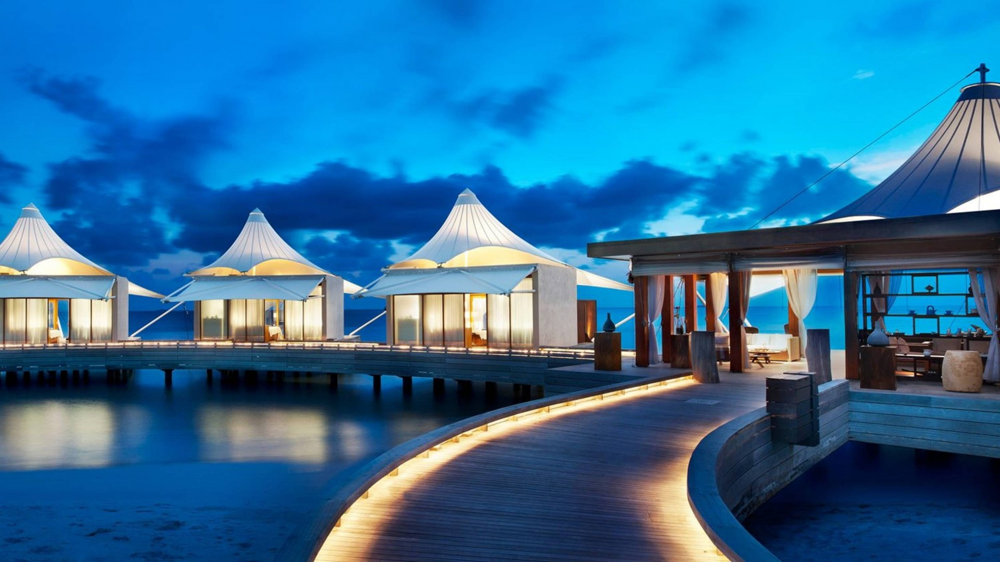

My Dream Destination : Maldives
Sujal ShekharThe Maldives has a tropical monsoon climate (Am) under the Köppen climate classification, which is affected by the large landmass of South Asia to the north. Because the Maldives has the lowest elevation of any country in the world, the temperature is constantly hot and often humid. The presence of this landmass causes differential heating of land and water. These factors set off a rush of moisture-rich air from the Indian Ocean over South Asia, resulting in the southwest monsoon. Two seasons dominate Maldives' weather: the dry season associated with the winter northeastern monsoon and the rainy season associated with the southwest monsoon which brings strong winds and storms. The shift from the dry northeast monsoon to the moist southwest monsoon occurs during April and May.
Environmental issues other than sea level rise include bad waste disposal and beach theft. Although the Maldives are kept relatively pristine and little litter can be found on the islands, no good waste disposal sites exist. Most trash from Malé and other resorts is simply dumped at Thilafushi.[95] 31 protected areas are administered by the Ministry of Environment and Energy and Environmental Protection Agency (EPA) of the Maldives.